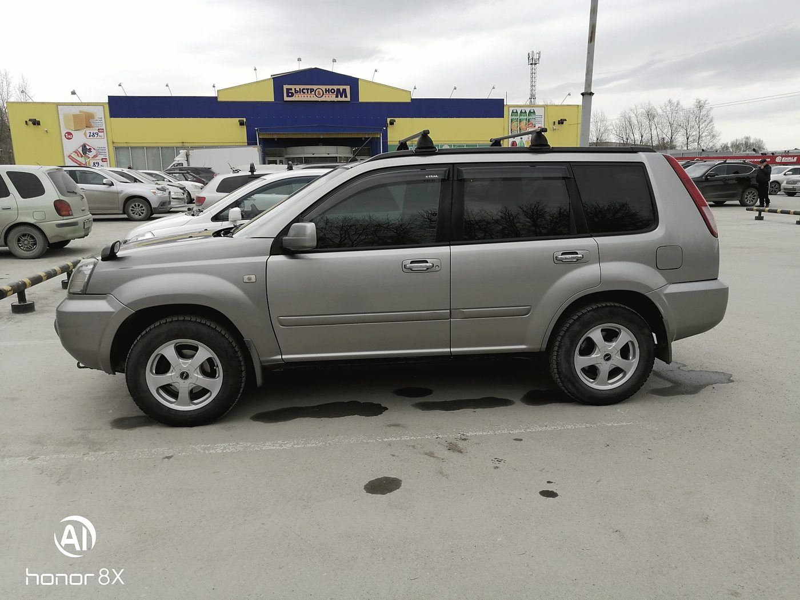
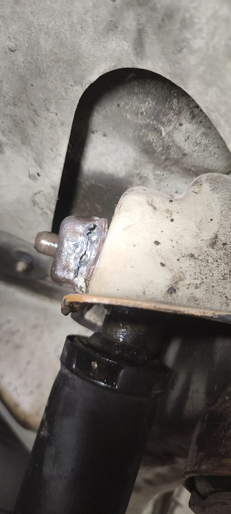
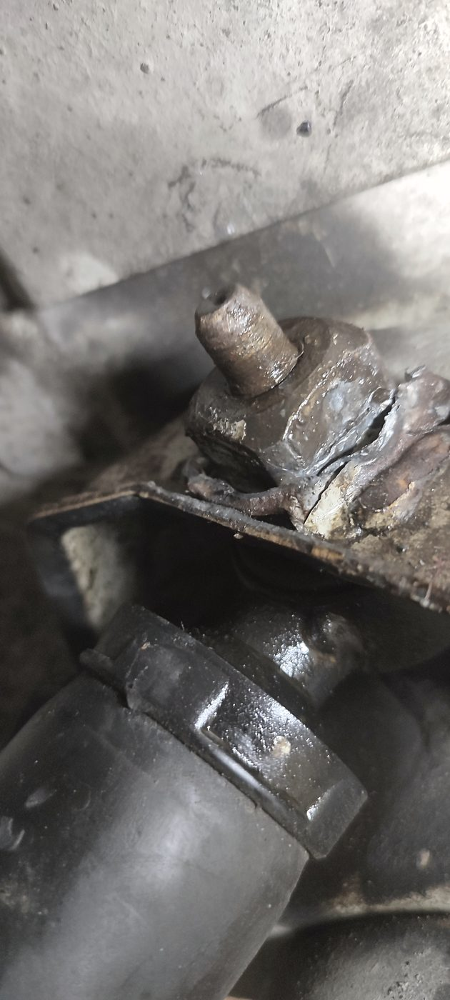
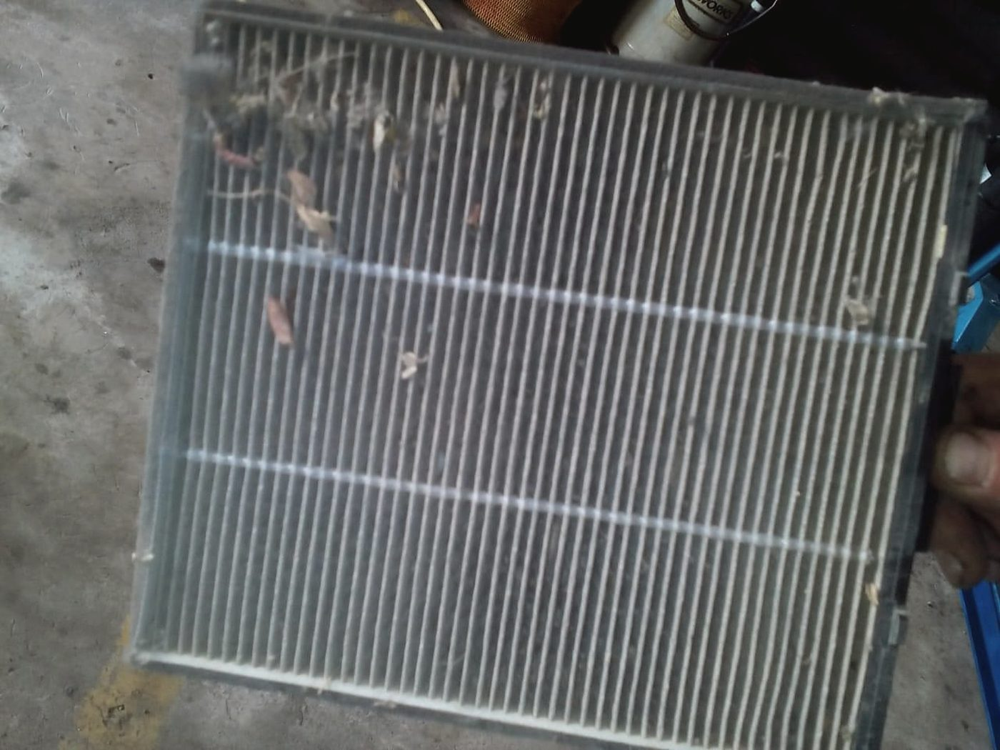
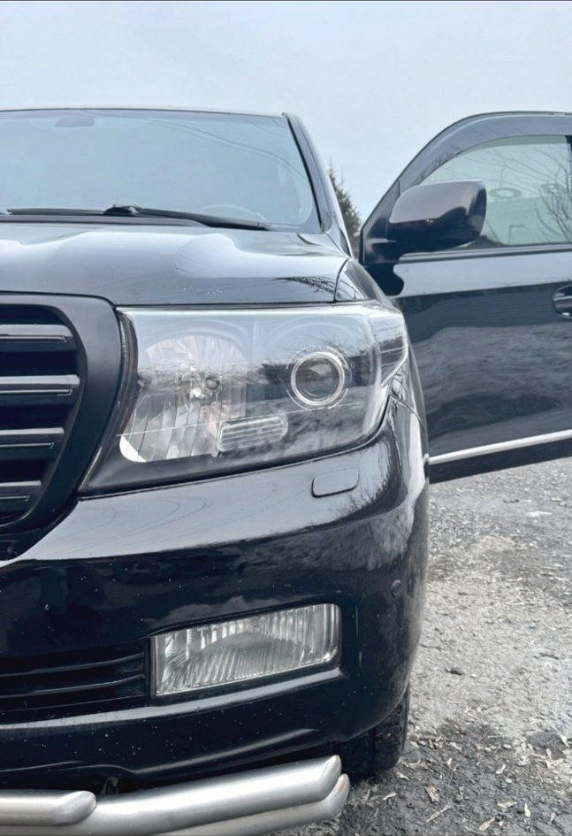
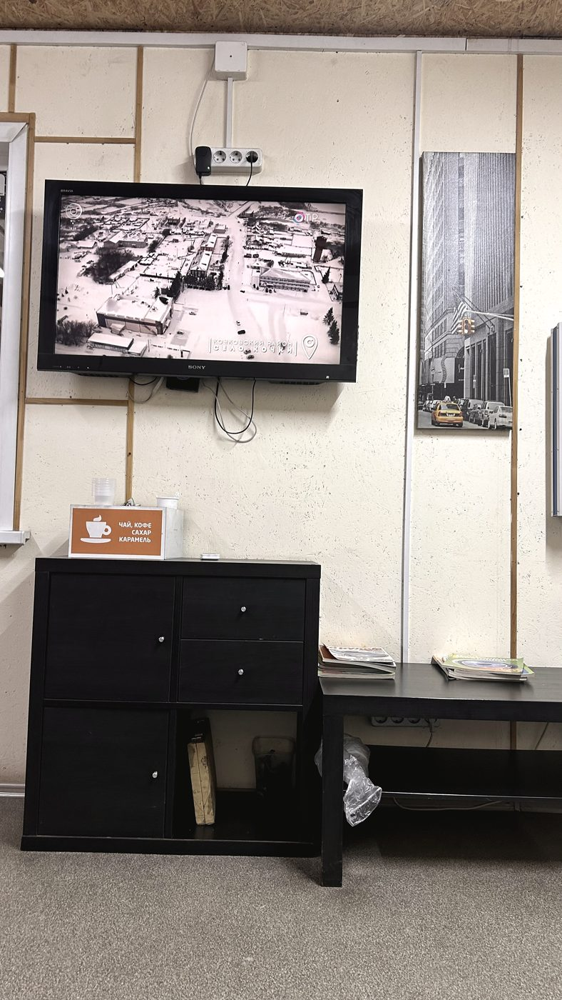

Документ 1
Диагностическая карта
Что проверили и что нашли — списком, а не на словах. С ней можно спокойно подумать день и решить, что делать сейчас, а что потом.
Автосервис · улица Немировича-Данченко, 120а · Кировский район
Мы работаем по заказ-наряду и договору: с диагностической картой, перечнем работ, ценами и гарантией. Это не формальность — это то, с чем вы можете вернуться, если что-то пойдёт не так. В гараже такого документа вам не дадут.

Документы
Документ 1
Что проверили и что нашли — списком, а не на словах. С ней можно спокойно подумать день и решить, что делать сейчас, а что потом.
Документ 2
Перечень работ и запчастей с ценами, подписанный до начала ремонта. Всё, чего в нём нет, мы не делаем без отдельного согласования.
Документ 3
Гарантийный срок на работы и на запчасти прописан в договоре и называется до начала ремонта, а не после.
Прямые ответы
В отзывах у нас есть не только благодарности. Отвечаем на каждый — и здесь тоже отвечаем, без обтекаемых формулировок.
Работы
Стойки, рычаги, сайлентблоки, ступицы. Отдельно — ремонт стоек и пневмоподвески.
Колодки, диски, суппорты, прокачка. Диски протачиваем, если толщина позволяет, — это дешевле замены.
После работ с подвеской и после новой резины. Можно без записи, если есть свободный подъёмник.
Бензин и дизель, включая станочные работы: шлифовка, расточка, гильзовка.
Аппаратная замена, масла в наличии и на розлив. Со снятием защиты, если она есть.
Поиск утечки, заправка, ремонт электрической части. Если после заправки не работает — это не закрытая работа.
Проводка, датчики, электрооборудование, неисправности приборной панели.
Выхлоп, крепления, элементы подвески. Варим на месте и показываем шов.
Переобувка, балансировка, замена колодок при том же заезде. Возможна запись на время.
Подбираем и заказываем сами: подвеска, тормоза, выхлоп, электрика, топливная. Масла, спецжидкости, автокосметика — на месте, есть доставка.





Отзывы · 4,2 из 5 по 205 оценкам в 2ГИС
«Не пришлось мотаться за запчастями и расходниками — всё организовал сервис»
Городской житель · 1 мая 2026
Обратилась за заправкой кондиционера, сразу же провели ТО. Комфортный офис, приятные приёмщики, всё объяснили, выдали диагностическую карту. Буду обращаться ещё.
Танечка · 21 июня 2026
Несколько раз обращался, всегда вопрос решался быстро и качественно — что далеко не во всех сервисах. По ценнику отчасти соглашусь с некоторыми отзывами, чуть выше среднего. Но главное же результат.
Алексей Щербаков · 21 июня 2026
Контакты